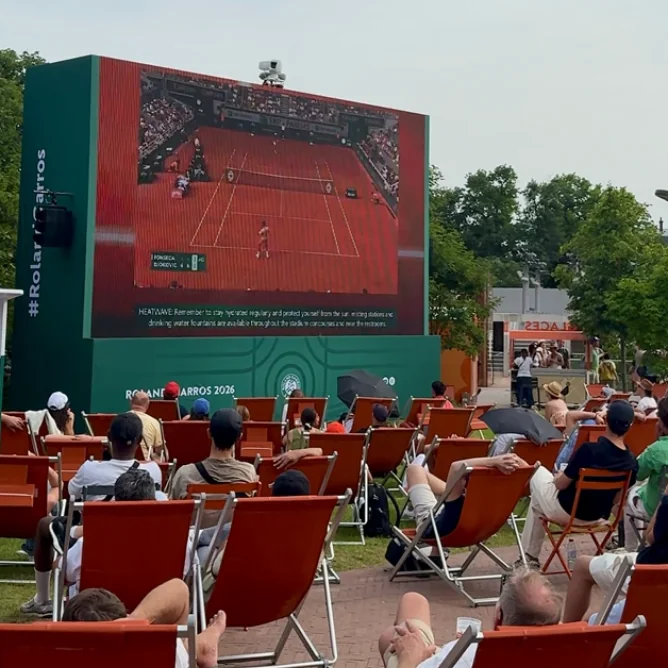

Évènements
Une expérience beauté 100% immersive

Le projet
À l’occasion du concert d’ Aya Nakamura au Stade de France , Anekdote a imaginé une loge expérientielle réunissant deux marques aux univers complémentaires : GHD et Juliette Has a Gun .
/01
Le contexte
Dans un moment culturel à très forte visibilité, l’enjeu était de créer une expérience de marque exclusive et immersive, capable de marquer les esprits avant le concert. Pensée comme un véritable espace de vie et de découverte, la loge a été scénographiée autour des identités de GHD et Juliette Has a Gun, offrant aux créateurs de contenu invités un parcours fluide entre beauté, parfum et préparation à l’événement.
/02
Notre proposition
Concevoir une loge premium multi-marques, alliant scénographie, expérience produit et accompagnement personnalisé, afin de proposer aux créateurs de contenu une immersion complète dans les univers de GHD et Juliette Has a Gun, avant un moment culturel majeur.
Objectifs
– Renforcer la désirabilité des marques à travers une expérience exclusive et incarnée.
– Créer un lien émotionnel fort entre les créateurs de contenu et les univers produits (hair & fragrance).
– Générer du contenu social authentique en amont d’un événement culturel à forte portée médiatique.
– Valoriser l’expertise produit via des expériences concrètes (coiffure, découverte parfum).
Les résultats.
La loge a accueilli 13 créateurs de contenu dans une expérience immersive et personnalisée, favorisant une appropriation naturelle des univers de marque. Les invités sont également repartis avec des gift bags produits, prolongeant l’expérience au-delà de l’événement et renforçant l’impact de l’activation.
Un moment immersif parfait pour tisser des relations créateurs et construire son programme ambassadeur !

Le projet suivant